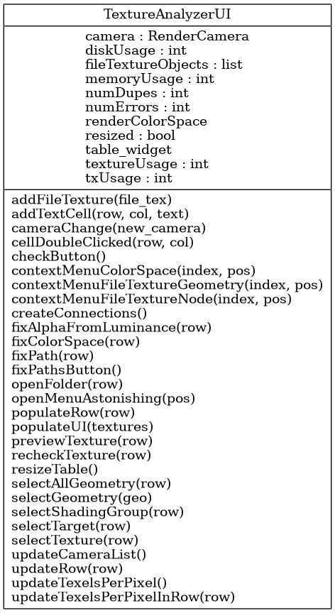

tlc.shading.textureanalyzer_ui.TextureAnalyzerUI
{kind=link}
- class tlc.shading.textureanalyzer_ui.TextureAnalyzerUI(*args: Any, **kwargs: Any)
Bases:
CheckerWindowUser interface for TextureAnalyzer
This checker is based on the QTableWidget
https://doc.qt.io/qtforpython-5/PySide2/QtWidgets/QTableWidget.html
- __init__(parent=shiboken2.wrapInstance)
Constructor
Methods
__init__([parent])Constructor
addFileTexture(file_tex)Add a file texture to the table This method adds a new row to the table in the UI, fill the cells with the data in a FileTexture object, and configures the operations over the textures
addTextCell(row, col, text)cellDoubleClicked(row, col)Check button function/callback
contextMenuColorSpace(index, pos)contextMenuFileTextureGeometry(index, pos)contextMenuFileTextureNode(index, pos)Connect buttons to functions
Build UI layout
fixAlphaFromLuminance(row)fixColorSpace(row)fixPath(row)Fix-paths button function/callback
initUI()Load interface from .ui file
openFolder(row)openMenuAstonishing(pos)populateRow(row)populateUI(textures)Clear the tables and repopulate them from textures in current scene
previewTexture(row)recheckTexture(row)resizeTable()selectAllGeometry(row)selectGeometry(geo)selectShadingGroup(row)selectTarget(row)selectTexture(row)updateCameraList()updateRow(row)updateTexelsPerPixel()Attributes
fileTextureObjects- addFileTexture(file_tex)
Add a file texture to the table This method adds a new row to the table in the UI, fill the cells with the data in a FileTexture object, and configures the operations over the textures
- Parameters:
table_widget (QTableWidget) – Table widget object in the UI
tex (FileTexture) – FileTexture object
- checkButton()
Check button function/callback
- createConnections()
Connect buttons to functions
- createLayout()
Build UI layout
- fixPathsButton()
Fix-paths button function/callback
- initUI()
Load interface from .ui file
- populateUI(textures)
Clear the tables and repopulate them from textures in current scene